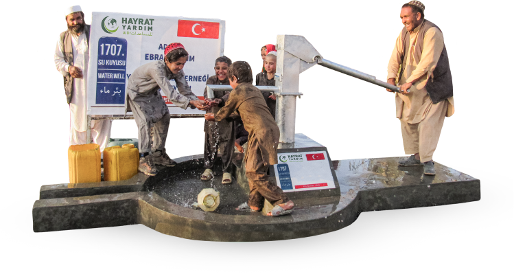
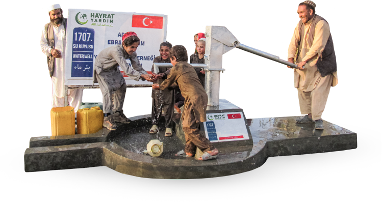

.png) 

Şühedanın İzinde 500 Su Kuyusu projesi, İçişleri Bakanlığımızın önderliğinde Türkiye’deki sivil toplum kuruluşlarının gerçekleştirdiği bir insani yardım projesidir. Bu proje ile amacımız; siz bağışcılarımızın desteğiyle vatanımız uğruna canlarını feda etmiş 500 askerimizin adına Afrika ve Asya’da su kuyuları açarak ihtiyaç sahiplerine temiz su ulaştırmak ve kahraman askerlerimizin hatıralarını sınırlar ötesinde yaşatmaktır.
.png)
.png)
temiz suya ulaşamıyor
içtiği su temiz değil
.png)
suya bağlı hastalıklardan hayatını kaybediyor
Şühedanın İzinde 500 Su Kuyusu projesi, İç İşleri Bakanlığı ile imzalanan ortak bir protokol dâhilinde yürütülmektedir. Bakanlığımız desteği ile Afrika ve Asya’nın çeşitli yerlerinde açılacak olan su kuyularımıza, Bakanlığımızın paylaştığı Şehitlerimizin isimleri verilecektir.
.png)
.png)

$ 1.800
$ 1.300
$ 3.000
$ 2.400
$ 2.800
$ 4.950
$ 7.500
$ 3.500

Dilediğiniz miktarda bağış yapın
Bağış Miktarı

Genel su kuyusu bağışında ₺5000 ve üstü bağışlarda tabela üzerine isim yazılacaktır.